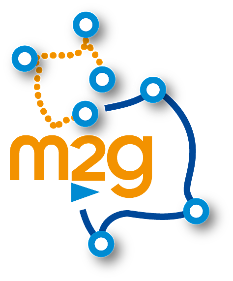

Moving2Gather

Context
Understanding the behaviour and the dynamics of living organisms has lead in the last twenty years to the emergence of cross connected areas of research like biologging and movement ecology. These fields of research rely on large and ever-increasing amounts of observations, which have been collected thanks to the development of electronic devices that track and monitor numerous terrestrial and marine organisms, such as mammals, birds or fishers (fishing vessels).
Ecosystem
Trajectories analyses is a meeting point between mathematics and ecology. There are several mathematical formulations of trajectory and many models to capture associated movement dynamics. Furthemore, statisticians have developed various statistical methods and framework that allow parameter estimation of these models given specific conditions.
Objectives
However specific features of monitoring data and of the various underlying processes of movements that are used make often difficult the straight application of existing operational methods. Furthermore the assumptions made in such statistical framework might be too restrictive from an ecological perspective and the models/approach would be largely improved by relaxing some of these assumptions.
Therefore, stimulating the meeting of key issues in ecology and relevant mathematical methods for analysing trajectories is still a prevailing challenge to improve the analysis of movement and identify the main future directions of models development.
The network objectives:
- Increasing the interactions between research networks developing or using statistical tools dedicated to the analysis of trajectories;
- Sharing the expertises and drawing up a state of art in trajectories modelling (Hidden Markov models, semi-hidden Markov models, Change point detection, random walks, etc.);
- working on future methodological developments required to
- perform models validation
- move from discret to continuous approaches
- upscale analyses from individual-based to population-based approaches
Supporting Organizations
 |
 |
|||
 |